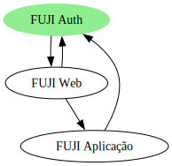
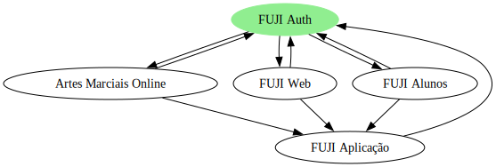

Novo servidor de autenticação
Arquitetura

Figura 1. Diagrama básico com a entrada da autenticação
|

Figura 2. Diagrama com vários serviços usando a mesma autenticação
|
Planejamento
Primeira fase
Basicamente na primeira fase precisamos começar a usar este novo servidor com uma perda mínima de funcionalidade, e mudanças necessárias em telas e fluxo de autenticação.
-
Implantação do novo servidor
-
Rotinas de backup de autenticação
-
Migração dos usuários atuais (gestores e professores)
-
Remoção dos usuários de alunos (atualmente sem uso e sem senha válida)
-
Hotsite para a página inicial
-
Tema para o keycloak
-
Recursos atuais a migrar e testar
-
Login
-
Logout
-
Mudar senha
-
Recuperar senha
-
Auto-registro
-
Registro manual
-
-
Módulo do professor
-
Novos recursos liberados pelo servidor
-
Autenticação Google
-
Lembrar do usuário
-
Confirmação de e-mail
-
Edição das mensagens
-
Log de eventos (quem se logou, quando, forçar logout, etc)
-
Troca de senha forçada
-
Ver quem está online
-
Internacionalização
-
Segunda fase
-
Novo módulo de aluno em interface separada (mais amigável ao responsável ou aluno)
-
Separação da interface de administração: https://admin.fuji.net.br
-
Suporte para reuso do mesmo e-mail em diferentes academias ou perfis
-
Suporte para autenticação em dois fatores
-
Autenticação em outros serviços (Facebook por exemplo)
Orçamento
| Tarefa | Orçamento |
|---|---|
Novo serviço, configuração, estudos, avaliações e prospecções do auth.fuji.net.br |
18h |
Backup |
4h |
Migração dos usuários (gestores e professores) |
8h |
Remoção dos usuários dos alunos (atuais) |
6h |
Hotsite para a página inicial do fuji.net.br [1] |
4h |
Tema para o auth.fuji.net.br [1] |
4h |
Recursos atuais a migrar e testar (login, logout, auto-registro, mudar senha, registro manual e recuperar senha) |
12h |
Módulo do professor |
10h |
Autenticação do Google |
4h |
Total |
70h |
| Conforme combinado 10h serão cobradas de qualquer maneira referente a todo trabalho de pesquisa e testes já realizados até aqui. Uma vez cobradas essas horas serão abatidas do total acima. |
Papéis
No fuji até a versão 3.x tínhamos pápeis montados apenas em grupos, eram eles:
-
Administrador
-
Gestor
-
Professor
-
Aluno (sem interface até o momento)
De agora em diante precisaremos flexibilizar e detalhar melhor essas regras e pápeis, eles podem ser revisitados a qualquer momento, mais isso poderá gerar novos custos (mesmo que baixos). Neste momento o ideal é que já possamos montar algo mais robusto (mesmo que ainda) sem uso…
Segue abaixo uma pequena lista de sugestões e peço que vocês elaborem mais…
No Papéis para o grupo atual de gestores, temos o papel gestor, que terá todos os direitos que foram listados, mas um usuário que tenha apenas gestor-financeiro terá todos os direitos na tela de título, e um outro que tenha apenas o papel registrar-pagamento, só poderá fazer isso mesmo.
| Durante o desenvolvimento eu mesmo devo perceber e sugerir novos pápeis, porém nem sempre isso é claro para mim, vocês entendendo melhor a necessidade do cliente podem antever mais essas necessidades. |
Próximos passos
-
Gerencianet → OpenID
-
Consultar Daniel → HotSite
-
UX
-
Artes marciais online poder consultar o FUJI
-
Material didático suportar autenticação centralizada
Preparação de ambiente
-
Criação do realm
-
Criação do client para backend
-
Criação do client para web
-
Configuração do backend (Keycloak com secret)
-
Configuração do frontend (conf.json no gitops)
-
Configurar E-mail
-
Criar conta create_user
-
Habilitar internacionalização (temas)
-
associação com o google: https://console.cloud.google.com/apis/credentials
-
Migração de contas (atualizando o UUID no banco)
-
Configurar para capturar eventos
-
Error: tela em branco quando não acha o uuid
-
Problemas com o uso da internacionalização…